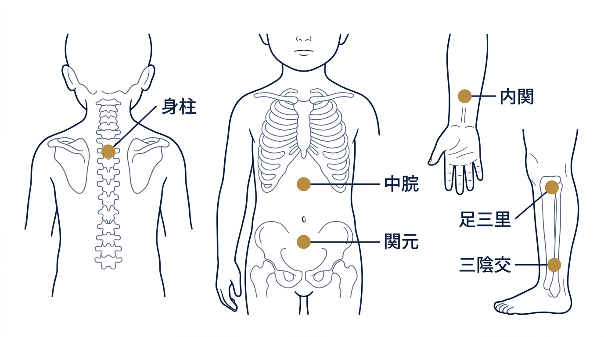

太田母斑の鍼灸
顔面に現れる青あざの太田母斑。皮膚科でのレーザー治療を最優先とし、外見の悩みによる緊張をケアします。
まず知っておきたい要点と改善の流れ
太田母斑は、通常は皮膚の表層に存在するメラノサイト（色素細胞）が真皮の深い層に異常に存在・増殖することで、三叉神経第1・第2枝領域（額、目の周囲、頬など）に青灰色〜淡褐色のあざを生じる良性の色素異常です。生後早期に出る早発型と思春期に出る遅発型があり、遺伝子変異（GNAQ等）やホルモン変化の関与が指摘されています。まれに眼球にも色素沈着がみられるため、皮膚科や眼科での専門的評価が重要です。（公式解説）
このようなお悩みはありませんか？
- ✓額や目の周り、頬などに青灰色〜褐色のあざがある
- ✓生後間もなく、または思春期頃からあざが濃くなってきた
- ✓白目（眼球結膜）にも青い色素沈着がみられる
- ✓見た目の変化による心理的なストレスや不安を抱えている
当院の施術アプローチ・改善の流れ
なぜ鍼灸で改善へ向かうのか？（作用機序の図解）
太田母斑に対する鍼灸は、「刺さない小児はり」による皮膚感覚〜自律神経の鎮静機序を通じて、お体本来の回復力を引き出します。

刺さない専用の「小児はり（てい鍼）」で、背中や手足の皮膚をリズミカルに優しく撫でます。
皮膚への穏やかな触覚刺激が脳へ伝わり、安心ホルモン（オキシトシン等）と副交感神経を促します。
興奮しやすい子どもの神経バランスを落ち着かせ、夜泣き・おねしょ・起立不調の土台を整えます。
保護者の方と寄り添いながら、お子さまの体調と成長ペースに合わせた無理のないケアを続けます。
院長YouTube解説・関連動画
太田母斑は、青あざの一種
太田母斑は、青あざの一種です。青あざが見られる部位は、顔面の中でも三叉神経第1枝や第2枝の支配領域です。額や目の周り、頬などに見られます。時に眼球結膜や鼓膜、鼻の粘膜、口腔の中の粘膜にもあざがみられます。
青あざは通常は片側性ですが、両側に起きることもあります。色調は青に褐色調が混ざっています。
・青灰色から茶色の斑点
太田母斑の最も顕著な特徴は、青灰色から茶色に見える斑点またはパッチです。この色素沈着は、メラニンが皮膚の深い層に蓄積することにより生じます。
これらの色素沈着は通常、顔の側面に現れ、特に目の周囲、額、頬、鼻の側部に多く見られます。時には、頭皮や耳にも影響が及ぶことがあります。
・片側性
太田母斑は一般に顔の一側にのみ現れますが、両側に現れる場合もあります。
・症状の進行
この状態は生まれつき存在することもあれば、幼少期や思春期に徐々に発現することもあります。多くの場合、太田母斑は時間とともに色が濃くなったり、範囲が広がったりすることがあります。
・他の症状の欠如
太田母斑は一般に無痛で、かゆみや痛みなどの他の身体的症状を伴いません。しかし、外見上の変化は心理的な影響を及ぼすことがあります。
・眼の変化
稀に、太田母斑は眼の周囲にも影響を及ぼすことがあり、視覚に影響を与える可能性があります。これは、眼の色素沈着によるもので、専門医による評価が必要です。
太田母斑の改善方法は、レーザーを使うことです。Qスイッチレーザーを行いますが、一回のレーザーで完全に改善することは難しいため、5回ほど行うことが必要になります。
レーザーでの改善を行なっている時、一時的に色素が濃くみえる時期もあります。改善を行う時期はさまざまで、思春期に入る前の早い段階で改善を行うことも良いですが、改善を行なって一度消えた太田母斑が年齢を重ねて再発することもあります。
・レーザー
レーザーは太田母斑の色素沈着を軽減するための最も効果的な方法の一つです。特定のタイプのレーザーが使用され、色素沈着を引き起こしているメラニン色素に特異的に作用します。
Qスイッチレーザー: Qスイッチルビーレーザー、QスイッチNd:YAGレーザー、Qスイッチアレキサンドライトレーザーが特に有効です。これらのレーザーは高エネルギーの光を短いパルスで放出し、色素細胞を破壊することで色素沈着を薄くします。
ピコ秒レーザー: ピコ秒レーザーは、さらに短いパルスを使用し、色素細胞に作用します。これは、特に頑固な色素沈着に有効であると報告されています。
・化学的ピーリング
化学的ピーリングは、皮膚の表面層を剥離させ、新しい皮膚細胞の成長を促すことにより、色素沈着の程度を軽減することがあります。しかし、太田母斑の改善においては、レーザーに比べて効果は限定的です。
・トップカルクリーム
特定のトップカルクリームが色素沈着の軽減に役立つことがあります。これには、ハイドロキノンやトレチノインが含まれることがありますが、これらのクリームの使用は、医師の監督の下で慎重に行う必要があります。
・ミクロニードリング
ミクロニードリングは、皮膚に微細な穿孔を作成し、皮膚の再生と改善を促す改善法です。これにより色素沈着の改善が見込まれる場合がありますが、太田母斑の改善におけるその効果と安全性についてはさらなる研究が必要です。
・ハイドロキノン
効果: メラニンの生成を抑制し、既存のメラニンを漂白する作用があります。
使用方法: 通常、対象部位に対して夜間に薄く塗布します。長期間の使用は肌への刺激や色素沈着のリスクを高めるため、医師の指示に従って使用することが重要です。
・トレチノイン
効果: 皮膚の細胞更新を促進し、色素沈着の軽減に役立ちます。
使用方法: 夜間、対象部位に軽く塗布します。肌への刺激があるため、使用には注意が必要です。
・コジック酸
効果: メラニン生成の過程に介入し、色素沈着の軽減に寄与します。
使用方法: 指示された通りに対象部位に適用します。ハイドロキノンに比べて肌への刺激が少ないとされています。
・アゼライク酸
効果: 抗炎症作用があり、メラニンの過剰な生成を抑えることで色素沈着を減少させます。
使用方法: 一日に二回、対象部位に塗布します。
・グリコール酸
効果: 皮膚の表層を剥離させ、新しい皮膚細胞の成長を促します。これにより、表面的な色素沈着が減少します。
使用方法: 専門の施設での処置として行われます。
太田母斑の現れる時期はいろいろあります。生まれた後半年くらいであらわれることもあれば成人になってからあらわれることもあります。
また、症状の程度が軽い場合、症状として目の下にクマがあらわれることもあります。


子供のお悩みのツボ図解とセルフケア
実際の施術ではお一人おひとりの体質・症状に合わせて選穴しますが、小児の補完ケア（刺さない小児鍼・夜尿症・小児喘息/アレルギー・悪心嘔吐）の臨床でよく用いられる代表的なツボの目安です。

📌 代表的なツボの詳細一覧表を開く（6穴） ▼
| ツボ名 | 位置の目安 | 主な狙い | セルフケアの注意点 |
|---|---|---|---|
| 身柱（しんちゅう） | 首を前に倒して出る背骨の出っ張りから3つ下 | 小児の自律神経調整・夜泣き・虚弱・喘息ケア | 背中を上から下へ優しく撫でるのみ。発熱時は控える |
| 中脘（ちゅうかん） | みぞおちとおへそのちょうど中間 | 胃腸機能・食欲不振・お腹の張り・吐き気ケア | 食直後は避け手のひらで時計回りに優しく撫でる |
| 関元（かんげん） | おへそから子どもの指3〜4本分ほど真下 | 下腹部・膀胱周囲の緊張緩和（夜尿症補完ケア） | 押さずに手のひらで温める程度。腹痛時は中止 |
| 内関（ないかん） | 手首内側横ジワから肘側へ子どもの指3本分 | 乗り物酔い・悪心嘔吐の緩和・落ち着きサポート | 軽くトントン触れるか指腹で数秒そっと押すのみ |
| 足三里（あしさんり） | 膝外側下のくぼみから子どもの指3〜4本分下 | 胃腸機能・免疫バランス・全身の体力サポート | 衣服の上から優しくさする（乳児の大泉門刺激は禁忌） |
| 三陰交（さんいんこう） | 内くるぶし頂点から子どもの指3〜4本分上 | 下半身の冷え・睡眠リズム・夜尿症補完サポート | 強く押さず温めながら撫でる程度 |
国際査読論文の科学的エビデンス
国際的な医学データベース（PubMed・Cochrane等）で報告されている小児の補完ケア（刺さない小児鍼・夜尿症・小児喘息/アレルギー・悪心嘔吐）領域の代表的な査読済み鍼灸研究をまとめています（標準治療との併用や研究上の限界を含めて正確に掲載）。
📚 査読論文データ・PubMed出典リンクを開く（4件） ▼
| 年・研究デザイン | 対象・規模 | 主な結果 | 限界・出典 |
|---|---|---|---|
| 2022年 メタ解析 | 小児夜尿症 13試験（n=890） | 非侵襲レーザー鍼（p=0.001）・灸（p=0.004）で改善児が有意増加。デスモプレシンとは完全治癒率差なし（p=0.57）。 | GRADE確実性は非常に低い。標準治療の補完ケア。 Explore (PMID: 34893441) |
| 2025年 メタ解析 | 小児喘息 16 RCTs（n=1,675・標準治療併用） | 鍼灸併用でFEV1pred%（MD 6.02, p=0.0128）・PEF（p=0.0019）が改善、IgE・IL-4・好酸球も有意低下。 | QOL（PAQLQ）は有意差なし、バイアス懸念あり。吸入薬継続必須。 Front Med (PMID: 40740962) |
| 2024年 メタ解析（TSA付） | 小児アレルギー性鼻炎 13 RCTs（n=1,186） | 鍼＋薬物併用は薬物単独より有効性優位（RR 1.29, p<0.00001）、再発率も低下（RR 0.40）。 | 鍼単独は薬物と差なし（p=0.13）。全体的な質は低い。 Int Forum Allergy Rhinol (PMID: 39017391) |
| 2016年 メタ解析 | 小児扁桃摘出術後嘔吐（PONV）8研究 | 内関（PC6）鍼刺激群で術後の悪心・嘔吐発生が有意に減少（RR 0.77, p<0.05）。 | 観察研究含む。急性嘔吐・脱水時は小児科受診最優先。 Laryngoscope (PMID: 26864736) |
参考文献・出典
- 銀座そうぜん鍼灸院「太田母斑の公式解説ページ」
- 2022年 メタ解析（小児夜尿症 13試験（n=890））— Explore (PMID: 34893441)
- 2025年 メタ解析（小児喘息 16 RCTs（n=1,675・標準治療併用））— Front Med (PMID: 40740962)
- 2024年 メタ解析（TSA付）（小児アレルギー性鼻炎 13 RCTs（n=1,186））— Int Forum Allergy Rhinol (PMID: 39017391)
- 2016年 メタ解析（小児扁桃摘出術後嘔吐（PONV）8研究）— Laryngoscope (PMID: 26864736)
よくある質問（FAQ）
Q. 太田母斑は鍼灸で薄くしたり消したりできますか？▼
Q. 治療の時期はいつ頃がよいのでしょうか？▼
あわせて読まれる関連疾患（子供のお悩み）
爪に黒〜褐色の縦線が入る爪甲色素線条。皮膚科での悪性黒色腫鑑別と経過観察を最優先にご案内します。
発達期に知的機能と適応機能の困難が生じる知的障害。多職種チーム支援を最優先し、穏やかに体調を支えます。
読み書きや計算に特異的な困難が生じる学習障害。医学的評価と個別学習支援を最優先に、学習に伴う心身の疲労を支えます。
生まれつきの脳機能発達の偏りによる発達障害。専門医と環境調整・周囲の理解を最優先に、睡眠と心身の疲れを穏やかに支えます。
規則違反や他者の権利侵害を繰り返す行為障害。児童精神科・環境調整を最優先し、神門・百会・合谷等で緊張と不眠を支えます。
成長ホルモン不足による低身長。小児内分泌科での早期精査と補充療法を最優先し、生活リズムを支えます。
おひとりで悩まず、まずはご相談ください
銀座本院・川口・大宮・横浜・博多・田無の各院でご予約を承っております。